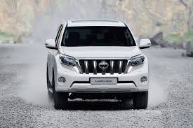
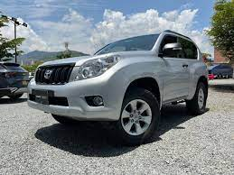
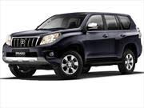

toyota
información:
oyota Motor Corporation es una empresa japonesa de fabricación de automóviles. Fundada en 1933 por Kiichiro Toyoda, su sede principal está ubicada en Toyota y Bunkyō aunque, por su carácter multinacional, cuenta con fábricas y sedes en varios países.
puede tener muchos colores
marca líder en automoción.
busca la movilidad para todos
nuestra producción sigue un flujo “Pull”, lo que significa que sólo producimos aquello que usted nos solicita
Sakichi Toyoda inventa el primer telar automático
compromiso con la calidad
Por lo general, duran más de 200 000 o incluso 250 000 millas


